Patentli tasarım El işçiliği
Grounding. Connection. Regulation.
Zeminlenme. Bağ. Düzenlenme.
Remble, terapi odasında uzman eliyle kullanılmak üzere tasarlanmış, tek parça ahşaptan işlenmiş bir çalışma enstrümanıdır.
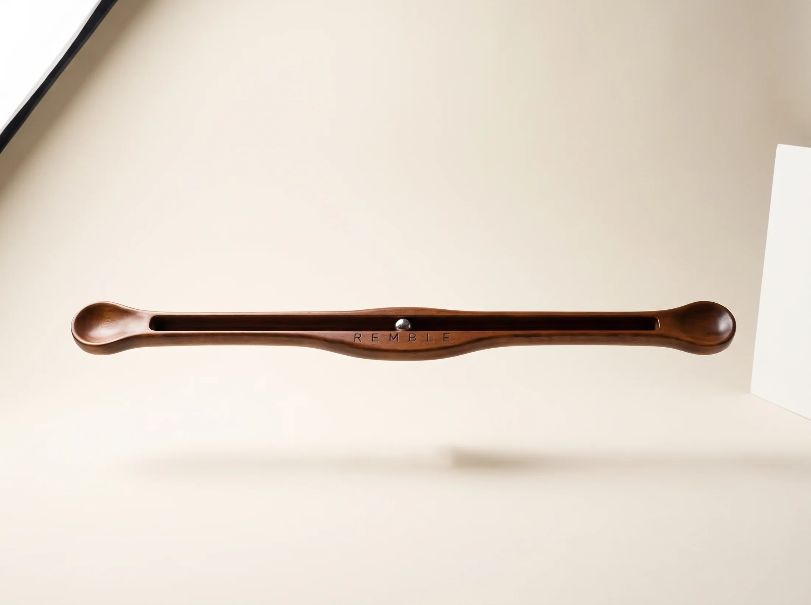
Remble nedir
İki ucundan kavranan uzun bir ahşap gövde, gövdenin ortasında boydan boya uzanan bir kanal ve kanalın içinde tek bir çelik bilye. Enstrüman sağa ve sola eğildiğinde bilye kendi ağırlığıyla akar; göz onu takip eder, el ritmi kurar.
Ekran yok, pil yok, ses yok. Yalnızca ahşap, çelik ve yerçekimi. Remble'ın yaptığı tek şey, dikkate izleyebileceği sakin ve öngörülebilir bir yol vermektir — gerisini seansı yürüten uzman kurar.
Remble bir tıbbi cihaz değildir; tanı koymaz, tedavi etmez. Ruh sağlığı alanında çalışan uzmanların seans içinde kullanması için tasarlanmış destekleyici bir araçtır.
Üç eksen
Kutunun içine yazdığımız üç kelime
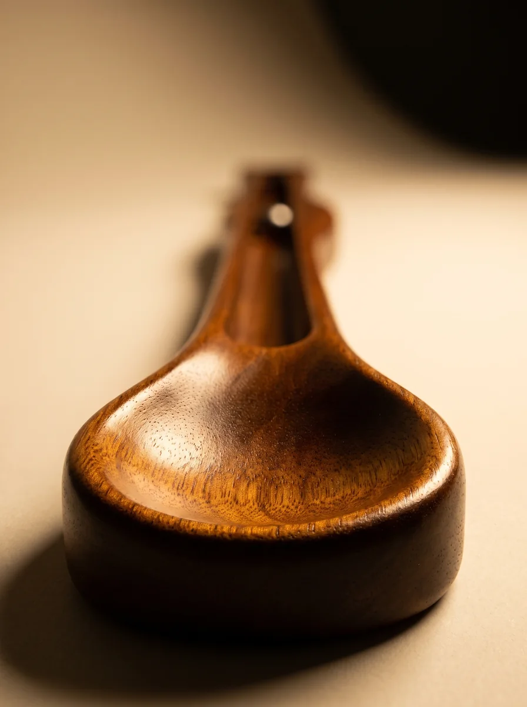
Grounding — Zeminlenme
Ahşabın ağırlığı ve avuç içine oturan konkav uçlar, danışanın dikkatini bedene ve o ana geri çağıran fiziksel bir çıpa oluşturur.
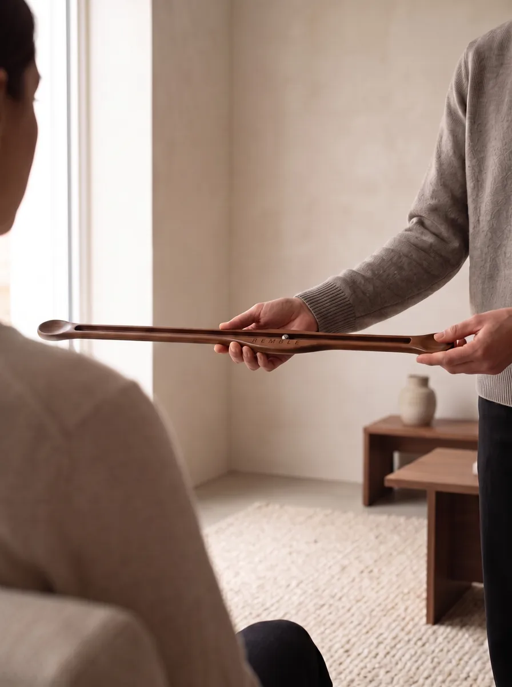
Connection — Bağ
Enstrüman iki taraftan tutulabilir. Uzman ve danışan aynı ritmi paylaştığında araç, aradaki teması taşıyan ortak bir zemine dönüşür.
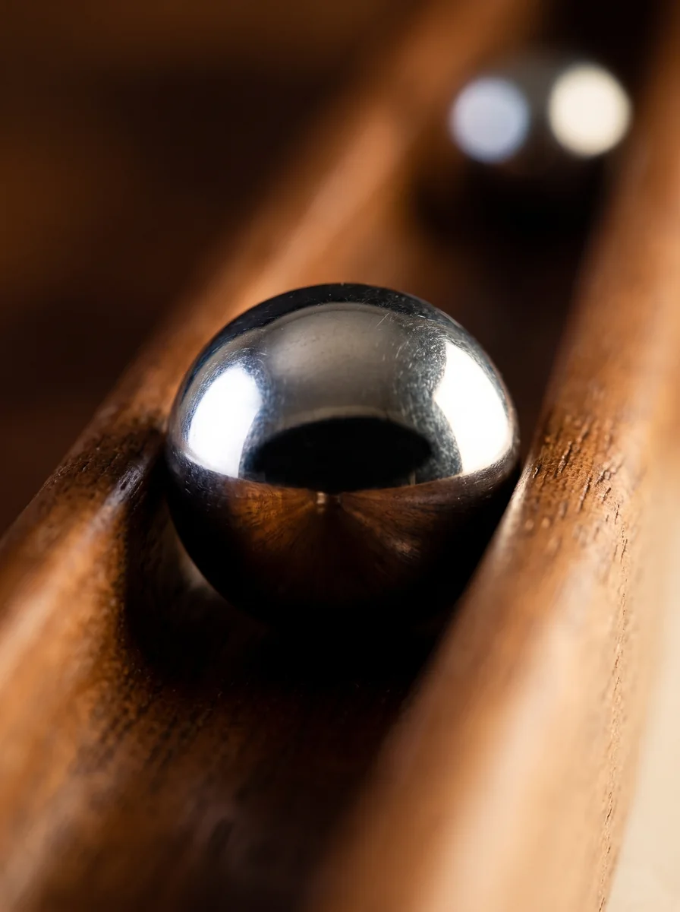
Regulation — Düzenlenme
Bilyenin uçtan uca akışı tekrarlanabilir bir tempo kurar. Tempoyu yavaşlatmak ya da hızlandırmak, seansın ritmini elle ayarlamak demektir.
Kullanım
Üç hareket
Remble'ın kullanımı öğrenilmesi dakikalar süren bir şeydir; nasıl kullanılacağına seansı yürüten uzman karar verir.
-
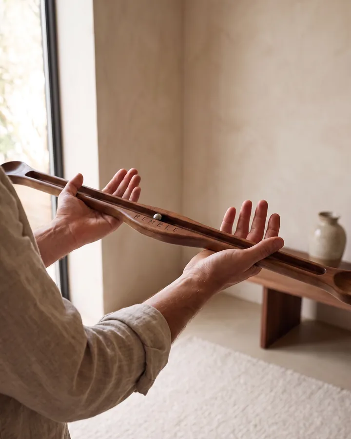
01Kavra
Gövdeyi iki ucundan, avuç içi konkav uçlara oturacak şekilde tutun.
-
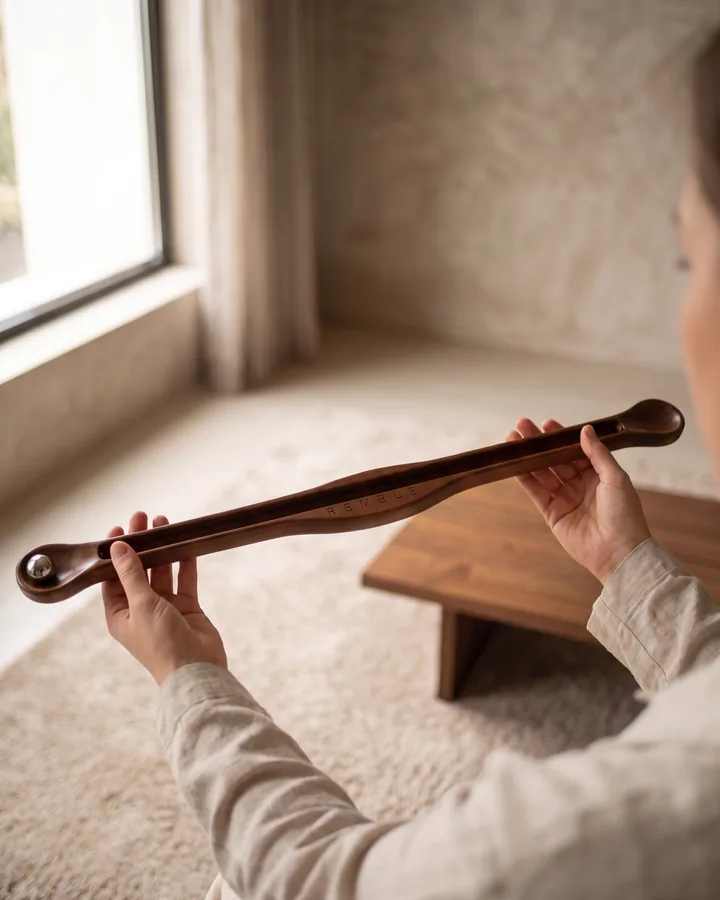
02Eğ
Bir ucu hafifçe alçaltın; bilye kendi ağırlığıyla kanal boyunca akmaya başlasın.
-
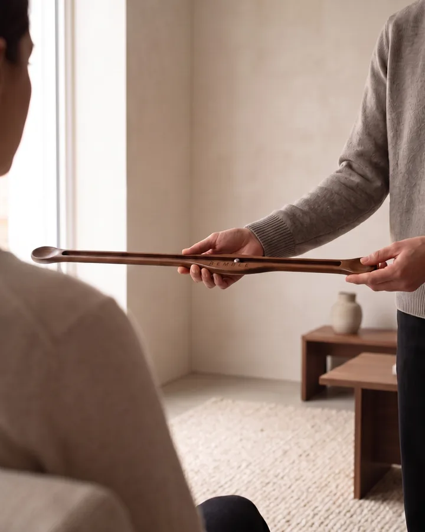
03Takip et
Bilyeyi gözle izleyin. Tempoyu seansın ihtiyacına göre yavaşlatın ya da hızlandırın.
Uzman kullanım notu
Zanaat
Tek parça ahşaptan
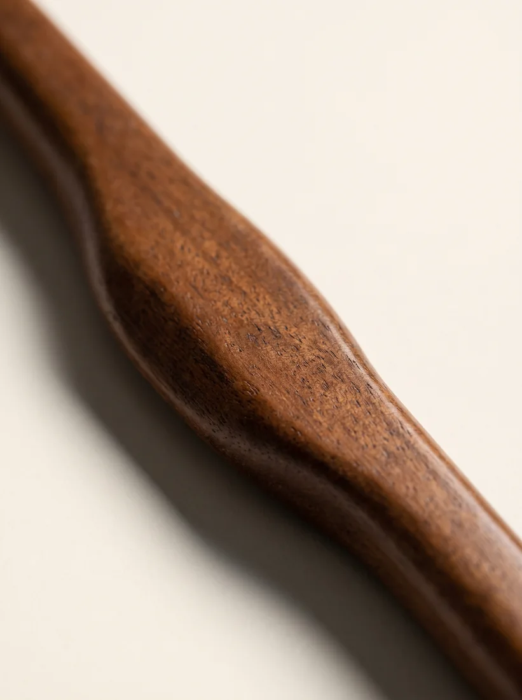
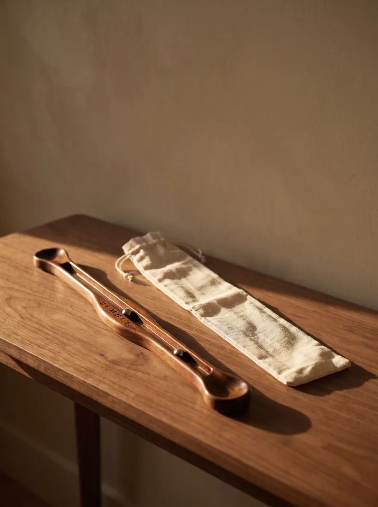
- Gövde
- Ahşap türü
- Uzunluk
- — cm
- Genişlik
- — cm
- Ağırlık
- — g
- Bilye
- Çelik bilye
- Yüzey
- Kaplama
- Üretim
- Üretim şekli
- Tescil
- Patentli tasarım
Kutu
Kliniğe yakışan bir teslim
Mıknatıslı kapaklı kutu, kadife yatak ve keten saklama kılıfı. Remble bir kutudan çıkar, bir rafta durur, bir masaya konur.
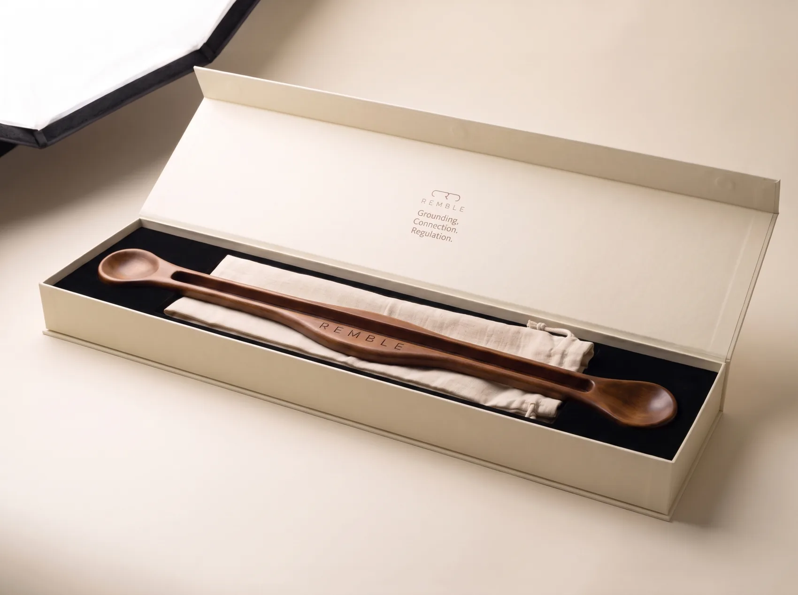
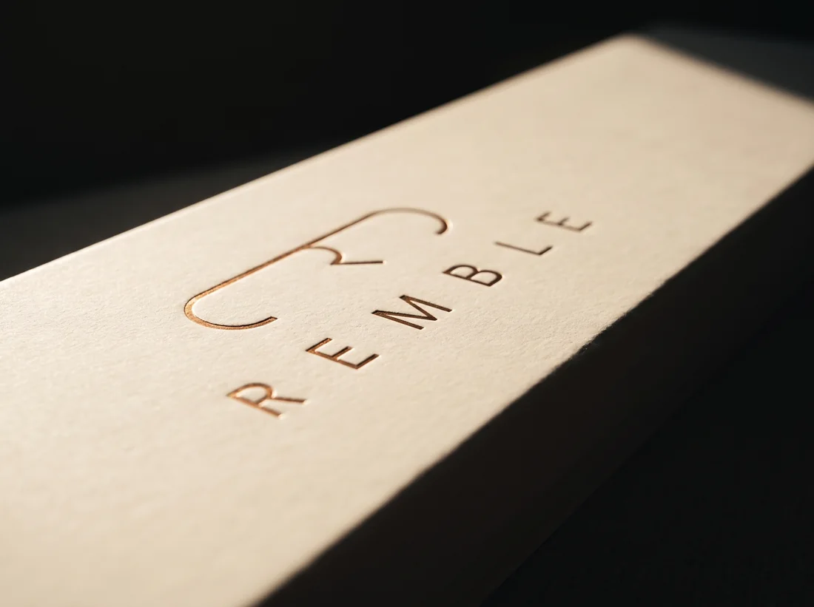
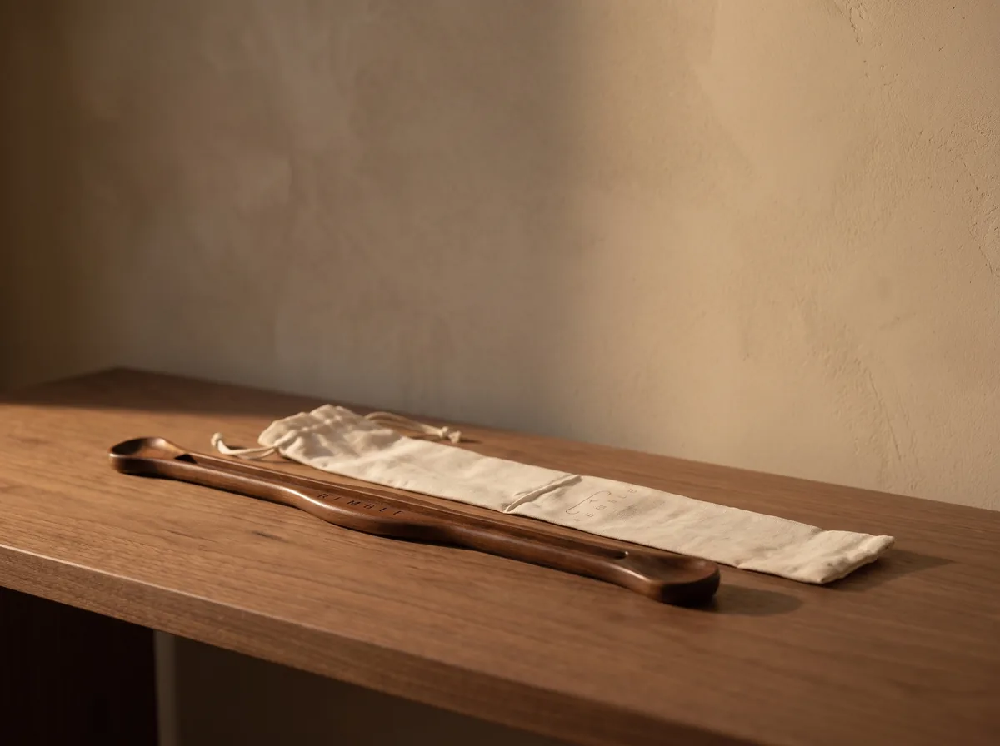
- Remble enstrüman
- Çelik bilye
- Keten saklama kılıfı
- Mıknatıslı sunum kutusu
- Ek içerik
Kimler için
Uzman elinde bir araç
- Psikologlar
- Psikiyatristler
- EMDR ile çalışan terapistler
- Çocuk ve ergen uzmanları
- Ergoterapistler
- Özel eğitim kurumları
- Okul rehberlik servisleri
- Diğer
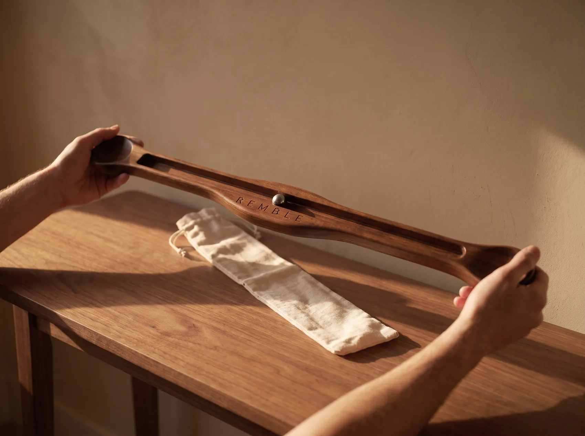
İş birliğiyle
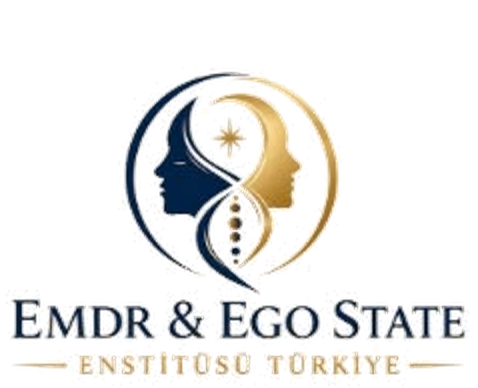
Remble, EMDR & Ego State Enstitüsü Türkiye iş birliğiyle sunulmaktadır.
S.S.S.
Sık sorulanlar
Remble bir tıbbi cihaz mı?
Hayır. Remble tanı koymaz, tedavi etmez ve tıbbi cihaz olarak sınıflandırılmaz. Ruh sağlığı alanındaki uzmanların seans içinde kullanması için tasarlanmış destekleyici bir araçtır.
Danışan evde tek başına kullanabilir mi?
Bakımı nasıl yapılır?
Kutuda kaç bilye geliyor ve farkları ne?
Kliniğim için toplu alım yapabilir miyim?
Evet. Klinik ve kurumlar için toplu tedarik mümkündür. İletişim bölümünden bize ulaşın.
Teslimat ne kadar sürüyor?
Kliniğiniz için Remble
Ürün, toplu tedarik ve kurumsal kullanım hakkındaki tüm sorularınız için doğrudan bize yazabilirsiniz.
Bize yazın- E-posta
- info@rembletools.com
- @rembletools
- Telefon
- —
- Adres
- —